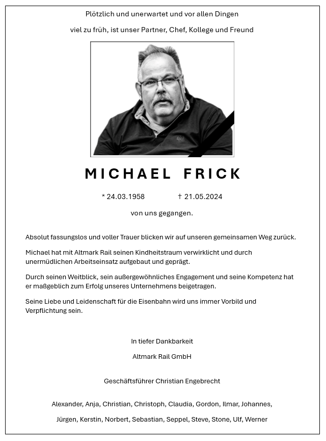
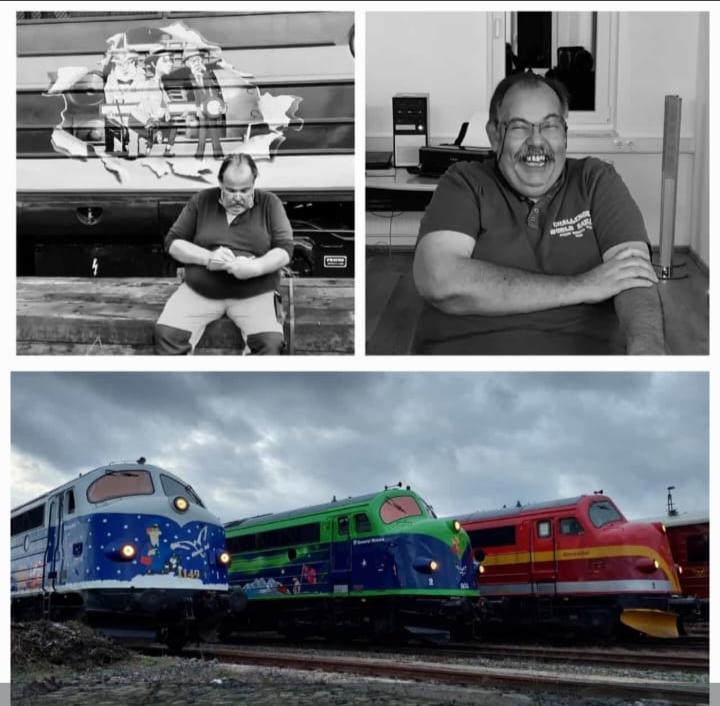

Michael Frick
Datum: 24. Mai 2024

Er ist gegangen doch er wird immer ein Teil von uns bleiben.
Ich hatte das Glück mit ihm Zeit zu verbringen und ihn ein wenig kenn zu lernen.
DAfür bin ich zu tiefst Dankbar.
Ich hoffe er ist an einem schönen Ort den das hat er sich zu tiefst verdient.
Sein traum Die Noabs Loks
Werden weiter fahren und ihn hoffentlich stolz machen
DAnke für alles.